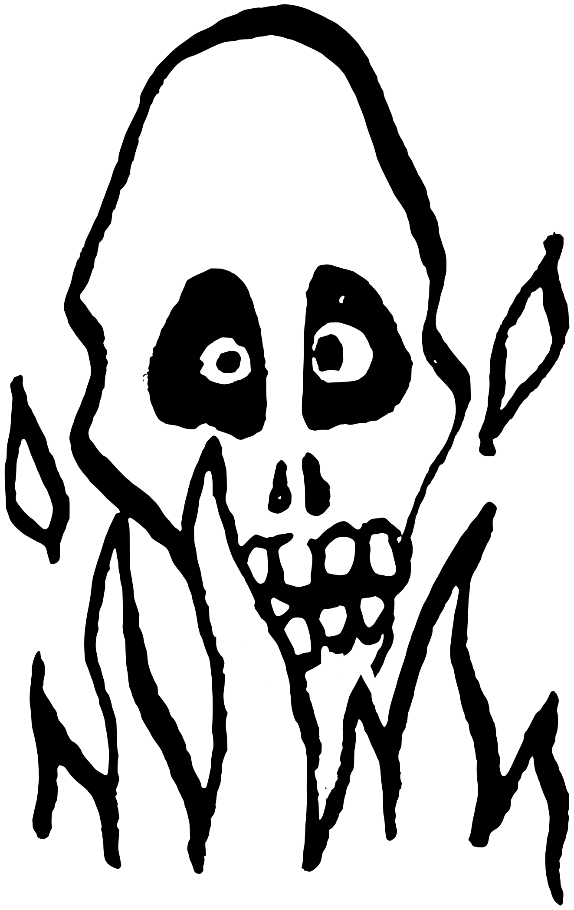

Deux saxophones, une basse défrettée et des percussions hétéroclites : un son rugueux, lyrique, qui se consume dans une danse aveugle*.
* Port du casque recommandé.

Burnin' Chamber Music (!) est une partition pour trois voix mélodiques : saxophone alto ou ténor, saxophone baryton, une basse sans frettes, rescapée de Kalamazoo, et des percussions hétéroclites. Trois lignes en contrepoint libre. Pas d'instrument harmonique. Rien d'harmonique du tout, d'ailleurs. Je compose seul, les improvisateurs en font un jeu collectif. Carla Bley ou Moondog ne sont sûrement pas loin.
C'est la complainte et c'est la transe.
Une cassette des Doors en boucle, et le Live in Japan de Coltrane. Ensuite la route, les bars de Toulouse. J'ai joué avec Raul de Souza, fréquenté Margriet et John Tchicai. J'ai voyagé, je me suis perdu aussi. Le dessin, la plume et l'encre.
« On est là… », comme dit mon ami Tiago.
Deux saxophones, une basse défrettée et des percussions hétéroclites : un son rugueux, lyrique, qui se consume dans une danse aveugle*.
* Port du casque recommandé.
Burnin' Chamber Music (!) est une œuvre en deux parties pour saxophone alto, saxophone baryton, basse défrettée et percussions hétéroclites. Un son rugueux et lyrique. L'écriture est formelle, tendue, et laisse des espaces dans lesquels l'improvisation va se précipiter. Ici, pas de musique de chambre, sinon de chambre ardente.

Comodoro Süleyman est musicien, compositeur et dessinateur. Il développe une activité de bassiste et improvisateur, de la chanson française à la cumbia colombienne. Il a joué avec Margriet et John Tchicai, Raul de Souza, Daniel Garbin, Jackson Scott Walter, Bombes 2 bal et La Macchina Volante. Il collabore également comme graphiste avec Los Gusanos (Bristol, Ninja Tune). Il a réuni de vieux potos pour Burnin' Chamber Music (!), son premier pas en tant que compositeur.